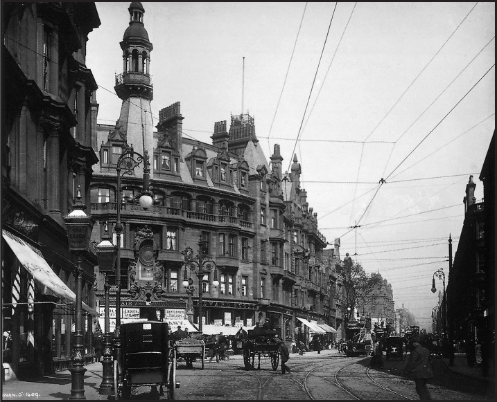

+++
title = "Charles Rennie Mackintosh"
description=""
url="sayi-11/charles-rennie-mackintosh"
aciklama="Charles Rennie Mackintosh, İskoçya'nın en ünlü mimarlarından biridir. Tasarladığı binalar modern hareketin önünü açtı. Mimari, onun ilk aşkıydı ancak aynı zamanda başarılı bir sanatçı, iç mimar, mobilya tasarımcısı, metal işçisi, vitray ve tekstil tasarımcısıydı. Ayrıca doğa ve organik bitki formlarını kullanarak yaptığı grafik tasarım çalışmaları, onu Sembolizm ve Art Nouveau'nun erken temsilcilerinden biri yaptı."
type="sayfa"
thumb="/img/charles-rennie-mackintosh-thumbnail.jpg"
date = "2021-07-10"
sayi=["11"]
sayfa="01"
yazar=["atahan gokturk"]
tags= ["ana sayfa", "dergi"]
+++

<div class="container">
   <div class="row">
            <div class="col-md-9">
         <p>
            Charles Rennie Mackintosh, 7 Haziran 1868 yılında Glasgow&#39;da
            doğdu. İskoç mimar, tasarımcı, suluboya ressamı ve sanatçıdır.
         </p>
         <p>
            Charles Rennie Mackintosh, İskoçya&#39;nın en ünlü mimarlarından
            biridir. Tasarladığı binalar modern hareketin önünü açtı. Mimari,
            onun ilk aşkıydı ancak aynı zamanda başarılı bir sanatçı, iç mimar,
            mobilya tasarımcısı, metal işçisi, vitray ve tekstil tasarımcısıydı.
            Ayrıca doğa ve organik bitki formlarını kullanarak yaptığı grafik
            tasarım çalışmaları, onu Sembolizm ve Art Nouveau&#39;nun erken
            temsilcilerinden biri yaptı. Hayatının son dönemlerinde incelik
            içeren suluboya resimleri yaptı. Olağanüstü çalışmaları, bugün halen
            yenilikçi ve modern kabul edilmektedir.
         </p>
      </div>
<div class="col-md-3 ">
         {{}}
         <small>
            Charles Rennie Mackintosh, 1893, 25 yaşında, T. &amp; R. Annan &amp;
            Sons tarafından Glasgow&#39;da çekildi.
         </small>
      </div>
   </div>

   <h3 id="çocukluk-ve-okul-yılları">Çocukluk ve Okul Yılları</h3>
   <div class="row">
      <div class="col-md-6">
         <p>
            Çocukluğundaki sağlık sorunları, onu sanatsal ilgi ve tutkularından
            gitmesini sağladı. Charles, çok güçlü olmaması yanı sıra ayağında
            kas kasılmasıyla doğdu. Bu onun topallamasına sebep oldu. Futbol
            maçında titreme ve üşüme sonucunda sağ gözünün kasları da kalıcı
            olarak etkilendi. Doktor, Mackintosh için çok iyi bir öneride
            bulundu. &quot;Charles, açık havada bol bol egzersiz yapmalı ve
            mümkün olduğunca uzun tatiller yapmalıdır.&quot; Bu tavsiye
            Mackintosh&#39;un beğenisine göreydi. Evleri, ağaçları ve bitkileri
            çizmeyi severdi.
         </p>
         <p>
            Polis müfettişi olan babası, oğlunun mimarlığı seçmesine karşı olsa
            da sıkı çalışma şartıyla ona izin verdi. Böylece Mackintosh 15
            yaşında okulu bıraktığında, 1889&#39;a kadar -21 yaşına kadar-
            Glasgow&#39;lu mimar John Hutchison&#39;ın yanında çırak olarak
            çalıştı. Aynı yıllarda Mimar Honeyman ve Keppie&#39;nin yanında
            teknik ressam olarak girdi. 1901 yılında ortak oldu.
         </p>
      </div>
      <div class="col-md-6">
         {{}}
         <small>Glasgow Şehri</small>
      </div>
   </div>

   <div class="row">
      <div class="col-md-6">
         <p>
            1884&#39;teki çıraklığın en başından beri Mackintosh, Glasgow Sanat
            Okulunda akşam derslerine katılıyordu. 2 yıl sonra sınavlarındaki ve
            projelerindeki başarılarından dolayı bursluluk verildi. Glasgow
            Mimarlar Enstitüsü, öğrencileri teşvik etmek için ödüller vermeye
            karar verdi. Mackintosh, verilen üç ödülden ikisini kazandı.
            Sonrasında South Kensington Museums tarafından düzenlenen ulusal bir
            ödülü de kazandı.
         </p>
         <p>
            1890&#39;da Mackintosh, Alexander Thomson seyahat bursu kazandı. 60£
            ödül ile İtalya turu yaptı. Gezi sırasında günlük tuttu ve eskizler
            yaptı. Sonrasında Glasgow Sanat Okulu Öğrenci Kulübü&#39;nün yıllık
            sergisine katıldı. Glasgow sanat okulunda genç mimarlar ve
            sanatçılar arasında popüler oldu.
         </p>
         <p>
            Honeyman ve Keppie&#39;nin ofisinde çırak arkadaşı Herbert McNair
            ile çok iyi arkadaş olmaları uzun sürmedi. McNair de Sanat
            Okulundaki gece derslerine katılıyordu. Mackintosh ve McNair,
            deneysel dekoratif tarzlara kendilerini kaptırdılar.
         </p>
      </div>
      <div class="col-md-6">
         {{}}
            <small>
         Orvieto Katedrali, 1891&#39;de İtalya turu sırasında Mackintosh&#39;un
         yaptığı suluboya. Erken Hristiyan, ortaçağ ve erken rönesans
         binalarından etkilendi. Özellikle detaylarından ve dekorasyonlarından
         ilham aldı.
      </small></div>

   </div>

   <h3 id="the-four-dörtlü-arkadaş-grubu">
      &quot;The Four&quot; Dörtlü Arkadaş Grubu
   </h3>

   <div class="row">
      <div class="col-md-8">
         <p>
            Sanat okulunda gündüz okuyan öğrenciler olan Frances ve Margeret
            Macdonald adlı iki kız kardeş de yeni çizim ve dekorasyon yollarını
            keşfediyorlardı. Çalışmaları Mackintosh ve McNair&#39;in
            çalışmalarına yalnızca teknik ve biçim açısından değil aynı zamanda
            içerik açısından da benziyordu.
         </p>
         <p>
            Dört öğrencinin olağanüstü yakınlığını gören sanat okulu başkanı
            Francis Newbery, bir araya getirilmeleri gerektiğine karar verdi. Bu
            yaratıcı birlik, o kadar başarılı oldu ki kısa süre sonra
            &quot;Dörtlü&quot; olarak anılmaya başladılar.
         </p>
         <div class="row">            <div class="col-md-6">    <p>
            Dekoratif tarzları; ön-rafaellere, Japon tasarımına ve Arts and
            Crafts hareketine borçluydu. Ancak &quot;Dörtlü&quot;&#39;nün bu
            yeni sanatı diğerlerinden farklıydı. Sembolik bağlamda sıra dışı
            stilize edilmiş insan ve bitki formları, sanat ve tasarımın
            &quot;Glasgow Stilinin&quot; gelişimi için biçimlendirici olacaktı.
         </p>        
          {{}}
         <small
            >İskoç Müzik İncelemesi için bir poster, 1896, C.R.
            Mackintosh.</small
         ></div><br><br>
             <div class="col-md-6">      {{}}
         <small>
            Dörtlü, Clyde Firth&#39;de Dunure&#39;da arkadaşlarıyla tatilde,
            c.1895. Mackintosh, sağda, solda McNair ile ön planda görülüyor.
            Margaret Macdonald en solda oturuyor ve resmin en üstünde Frances
            Macdonald, sağ posterdeki pozu taklit ediyor. </small
         ></div>

        </div>
      </div>
      <div class="col-md-4">
         {{}}
         <small>
            Macdonald kardeşler ve Herbert McNair tarafından Glasgow Güzel
            Sanatlar Enstitüsü için tasarlanmıştır. 1895
         </small>
      </div>
   </div>

   <h3 id="glasgow-sanat-okulu">Glasgow Sanat Okulu</h3>
   <div class="row">
      <div class="col-md-6">   <p>
      1900&#39;lerde bu yeni dekoratif sanatı, Glasgow Stili olarak bilinir hale
      geldi.
   </p>
         {{}}
         <small>
            Glasgow Sanat Okulu, Renfrew Caddesi&#39;ndeki kuzey cephesindeki
            ana giriş.
         </small>
      </div>
      <div class="col-md-6">
         {{}}
         <small>
            Kütüphane, 1907-09, 2014 yangınında yok olmadan önce. 15 Haziran
            2018&#39;de çıkan ikinci yangınla birlikte kullanılmaz hale geldi.
         </small>
      </div>
   </div>

   <h2 id="şehir-mimarı">Şehir Mimarı</h2>
   <div class="row">
      <div class="col-md-6">
         <p>
            1893-1906 yılları arasında, Honeyman ve Keppie firması aracılığıyla
            Mackintosh, Glasgow&#39;da bina tasarlamak ve inşa etmek üzere
            görevlendirildi. Bunlar arasında Glasgow Herald (1894) ve Daily
            Record (1901) gazete ofisleri, Glasgow Üniversitesi için Queen
            Margaret Koleji binası ve Martyrs&#39; Public School (her ikisi de
            1895), Queen&#39;s Cross Kilisesi (1897) ve 1904&#39;te Scotland
            Street School. Bu mimarilerin çoğu başarılı oldu.
         </p>
         <p>
            Ancak ilk tasarımları eleştirmenlerin saldırısına uğradı.
            1891&#39;de Bilim ve Sanat Müzesi için Ulusal Gümüş Madalya
            kazanmasına rağmen, Mackintosh&#39;un tasarımı The Builder dergisi
            tarafından eleştirildi.
         </p>
         <p>
            Bir başka hayal kırıklığı ise 1902&#39;de Liverpool Anglikan
            Katedrali için yapılan bir yarışmada başarısız olmasıydı. Daha önce,
            1897&#39;de Mackintosh, Glasgow&#39;daki Queen&#39;s Cross
            Kilisesi&#39;ni tasarladı. Queen&#39;s Cross Kilisesi bugün
            1973&#39;te kurulan Charles Rennie Mackintosh Derneği&#39;nin
            uluslararası merkezi olarak kullanılıyor.
         </p>
      </div>
      <div class="col-md-6">
         {{}}<small>
            Glasgow&#39;daki Queen&#39;s Cross Kilisesi, 1897&#39;de Mackintosh
            tarafından tasarlandı. Kilise şu anda Charles Rennie Mackintosh
            Society&#39;nin merkezi.
         </small>
      </div>
   </div>


   <h2 id="mackintosh-evi">Mackintosh Evi</h2>
   <div class="row">
      <div class="col-md-6">
         <p>
            Charles Rennie Mackintosh ve Margeret Macdonald, 22 Ağustos
            1900&#39;de evlendiler. Dörtlünün diğer üyeleri; Herbert McNair ve
            Margaret&#39;in kız kardeşi Frances da bir yıl önce aynı kilisede
            evlenmişlerdi.
         </p>
         {{}}
         <small
            >Margaret Macdonald Mackintosh ve Charles Rennie Mackintosh</small
         >
      </div>
      <div class="col-md-6">
   {{}}
   <small>
      Mackintosh tarafından sade bir iç mekan olarak tasarlanan koyu panelli
      yemek odası, ilk yüksek arkalıklı sandalye tasarımı - Argyle Street
      sandalyesi.
   </small>
      </div>
   </div>


   <div class="row">
      <div class="col-md-6">   <h2 id="viyana-torino-ve-moskova">Viyana, Torino ve Moskova</h2>
         <p>
            Kariyeri boyunca, Mackintosh&#39;un başarıları, İngiltere&#39;den
            çok yurtdışında anlaşıldı. 1900&#39;de Margaret MacDonald ile
            evlendiği yılda, dörtlü Viyana&#39;daki Avusturyalı Sanatçı Grubu
            tarafından Sekizinci Viyana Secession sergisinde yer aldılar.
         </p>
         {{}}
         <small>
            Mackintosh&#39;ların Torino&#39;daki Uluslararası Modern Dekoratif
            Sanatlar Sergisi&#39;nin bir parçası olan pembe, gümüş ve beyaz bir
            oda olan Rose Boudoir, 1902.
         </small>
      </div>
      <div class="col-md-6">
 <h2  id="house-for-an-art-lover-1901">House for an Art Lover 1901</h2>
   <p><strong>Bir Sanatsever için Ev 1901</strong></p> <p>
            1901&#39;de Mackintosh, &quot;tamamen modern bir tarzda büyük bir
            ev&quot; olarak tasarlanan bir Sanat Sever Evi, &quot;Haus eines
            Kunstfreundes&quot; tasarımı için uluslararası bir yarışmaya
            katıldı. Mackintosh&#39;un tasarımı, gerekli sayıda iç perspektif
            sunmaması nedeniyle diskalifiye edilmiş olsa da, jüri üyeleri onun
            çalışmasını &#39;ayırt edici renklendirme, etkileyici tasarım, iç ve
            dış yapının birleştiriciliği&#39; nedeniyle övdü. Ona 600 puanlık
            özel bir ödül verdiler.
         </p>  {{}}
         <small>
            Mackintosh&#39;un Sanat Sever Evi&#39;nin kuzey-batı perspektifinden
            çizimi.
         </small>
      </div>
   </div>

   <div class="row">
      <div class="col-md-4">
         <p>
            Mackintosh, &#39;Haus eines Kunstfreundes&#39; planına güvendiğini
            gösterdi. Yarışma özetinde Mackintoshlar, baştan sona birlikte
            çalışarak sanatsal ifade özgürlüğünün tadını çıkardılar.
         </p>
         <p>
            Müzik odasının zarif tasarımında Margaret&#39;ın ayırt ediciliğini
            görmek mümkündür. Evin genelinde gül motifleri sıklıkla
            kullanılmıştır.
         </p>
      </div>
      <div class="col-md-8">
         {{}}
         <small>
            Resepsiyon ve müzik odası için tasarım. Soldaki altı uzun pencere,
            ışığın içeri girmesine izin verir ve piyano batı duvarına karşı
            yerleştirilir.
         </small>
      </div>
   </div>

   <div class="row">
      <div class="col-md-5">
         {{}}<small>Yarışma Portfolyosunun Kapağı</small>
      </div>
      <div class="col-md-6 offset-md-1">
         {{}}
         <small>
            Yemek odası için tasarım. Koyu renkli ahşap paneller ve mobilyalar,
            parlak gesso paneller ve hafif tavan tarafından kaldırılmıştır.
         </small>
      </div>
   </div>

   <h2 id="the-hill-house-1902">The Hill House, 1902</h2>
   <div class="row">
      <div class="col-md-6">
         <p>
            William Davidson&#39;un evini tamamlamada, Windyhill,
            Mackintosh&#39;un tasarımı Glasgow Yayıncısı, Walter Blackie&#39;nin
            dikkatini çekti. Blackie, Mackintosh&#39;tan Helensburgh&#39;da bir
            ev tasarlamasını istedi.
         </p>
         {{}}
         <small>The Hill House&#39;un çizimi, güneybatıdan görünüş.</small>
      </div>
      <div class="col-md-6 mt-md-3">
        {{}}
         <small
            >Geniş koridor, The Hill House&#39;a dramatik bir giriş
            oluşturur.</small
         >
      </div>
   </div>

   <div class="row">
      <div class="col-md-4">
         {{}}
         <small>
            Evin güneydoğu köşesi, servis merdiveni kulesini ve bahçıvan
            kulübesini gösteriyor.
         </small>
      </div>
      <div class="col-md-3">
         {{}}
         <small
            >Mackintosh&#39;un ayırt edici saati ve koridorda soyut
            duvar.</small
         >
      </div>
      <div class="col-md-5">
        {{}}
        <small>
           Zarif ana yatak odası. Her mobilya parçası Mackintosh tarafından oda
           için tasarlanmıştır. (<a
              href="https://www.markut.net/sayi-0/ikonik-tasarimlar-sandalye/"
              target="_blank"
              >Hill House Chair</a
           >&#39;i 0. sayımızda yer vermiştik.)
        </small>
     </div>
   </div>


   <h3 id="the-willlow-tea-rooms-1903">The Willlow Tea Rooms 1903</h3>
   <div class="row">
      <div class="col-md-6">
         <p>
            Geç Viktorya dönemi Glasgow&#39;unda çay salonları, saygın buluşma
            yerleri olarak gelişmeye başlıyordu. Çalışkan iş kadını ve girişimci
            Kate Cranston 1903&#39;te Mackintosh&#39;tan Glasgow, Sauchiehall
            Caddesi&#39;ndeki Willow Tea Rooms adlı iddialı bir plan
            tasarlamasını istedi. Mackintosh, Willow&#39;un dış cephesini
            yeniden inşa etti ve sofistike iç mekanlar yarattı.
         </p>
         {{}}
         <small>1905&#39;te Willow Tea Rooms.</small>
      </div>
      <div class="col-md-6">
        <div class="row">
            <div class="col-md-6">
               {{}}
               <small>Sandalye tasarımı, Salon de Luxe.</small>
            </div>
            <div class="col-md-6">
                <p>
                   Ekim 1903&#39;te Salon de Luxe çay salonu açıldığında, Glasgow
                   Evening News, &#39;dekoratör sanatının bir harikası&#39; olarak
                   tanımladı ve çay salonu Glasgow&#39;un en gözde mekanlarından biri
                   oldu. Memnun bir Alman ziyaretçi, Salon de Luxe&#39;in &quot;sevgi
                   dolu düşüncelerin sonucu&quot; olduğunu söyledi.
                </p>
             </div>
         </div>
         {{}}
                <small>
                   Bugün, ziyaretçilerin hala dinlenip çayın tadını çıkarabilecekleri
                   Willow Tea Rooms&#39;taki Salon de Luxe.
                </small>
      </div>
   </div>


   <h3 id="walberswick-ve-çiçek-resimleri">Walberswick ve Çiçek Resimleri</h3>
   
   <div class="row">
      <div class="col-md-4">
         <p>
            Haziran 1913&#39;te Mackintosh&#39;un Honeyman Keppie ve
            Mackintosh&#39;taki ortaklığı, iş eksikliği nedeniyle feshedildi. Bu
            onun depresyona girmesine neden oldu ve bu da daha sonra alkole olan
            bağımlılığını arttırdı. Birinci Dünya Savaşı&#39;nın patlak
            vermesinden hemen önce, Charles ve Margaret, Francis Newbery&#39;nin
            bir evinin bulunduğu Walberswick, Suffolk&#39;ta kendilerini
            toparlamak için Glasgow&#39;dan ayrıldılar.
         </p>
         <p>
            Mackintosh, en iyi karakalem ve suluboya çiçek resimlerinden bazılarını burada yaptı.
            Bu botanik çizimlerin Almanya&#39;da sergilenmesi mümkün
            görünüyordu, ancak Alman ve Avusturyalı arkadaşlarıyla yazışmaları
            Mackintosh&#39;un casus olduğu şüphesini uyandırdı. 1915&#39;te I.
            Dünya Savaşı sırasında kısa bir süre tutuklandı.
            Mackintoshlar, Chelsea&#39;ye bu üzücü olay sonrasında geldiler.
            Aynı zamanda tekstil tasarımları üretmeye başladılar. Liberty gibi
            önde gelen tekstil firmaları için tasarımlar yaptılar.
         </p>
      </div>
      <div class="col-md-4">
         {{}}<blockquote>
          &quot;Sanat çiçektir. Hayat yeşil bir yapraktır. Her sanatçı,
          çiçeğini güzelleştirmeye; dünyayı yaşamın kendisinden daha değerli,
          daha güzel, daha kalıcı şeylerin var olabileceğine ikna edecek bir
          şey yapmaya çalışsın.&quot; <br> - C.R. MACKINTOSH, 1902
       </blockquote>
      </div>    <div class="col-md-4">
       {{}}       
    </div>
   </div>

   <h3 id="chelsea-ve-derngate-1915-23">Chelsea ve Derngate 1915-23</h3>
   <div class="row">
      <div class="col-md-6">
         <p>
            1915&#39;te Mackintoshlar Londra&#39;ya geldi. Chelsea önümüzdeki
            sekiz yıl boyunca evleri oldu. Çift, Glebe Place&#39;de stüdyo
            kiraladı ve kısa süre sonra Chelsea&#39;nin bohem sanat topluluğunun
            bir parçası oldu. Arkadaşları arasında ressam Augustus John ve ünlü
            oyun yazarı George Bernard Shaw vardı. Mackintosh&#39;un bu süre
            zarfında birkaç mimari siparişi vardı, parası yoktu. Margaret&#39;ın
            tekstil tasarımlarından geçimlerini sağlıyorlardı.
         </p>
         <p>
            Bu zorlu ekonomik ortamda, Mackintosh&#39;un serveti, 1916&#39;da,
            Northampton&#39;daki mühendis W.J. Bassett-Lowke&#39;nin evini
            yeniden tasarlamakla görevlendirildiği zaman iyileşti.
            Mackintosh&#39;un iç mekanlar için cesur, geometrik tasarımları ve
            son derece modern arka cephesi, mimarın yeniden gücünün zirvesinde
            çalışmasının ve yeni dekoratif formları denemesinin kendinden emin
            bir ifadesiydi.
         </p>
         <p>
            1920&#39;de ressam Harold Squire için Glebe Place&#39;de bir stüdyo
            ev tasarlaması istendi. Bunu, diğer iki sanatçı için benzer komşu
            stüdyolar tasarlamak üzere başka bir sipariş izledi. Sadece
            Squire&#39;ın tasarımı yapıldı. Mackintosh&#39;tan ayrıca Harold
            Squire&#39;ın stüdyosunun yanındaki sitede bir blok stüdyo daire
            için planlar hazırlaması istendi, ancak bu proje fon eksikliği
            nedeniyle başarısız oldu.
         </p>
      </div>
      <div class="col-md-6">
         {{}}
         <small>
            Mackintosh&#39;un Chelsea&#39;deki üç sanatçı stüdyosu için kuzey
            cephesi, 1920.
         </small>
      </div>
   </div>

   <h3 id="fransa-ve-son-yılları-1923-28">Fransa ve Son Yılları 1923-28</h3>


   <div class="row">
      <div class="col-md-6">
   <p>
      1923&#39;te, mimari çalışma umuduyla ve finansal olarak giderek daha fazla
      baskı altında olan Mackintoshlar, Güney Fransa&#39;ya doğru yola çıktı.
      Suluboya ressamı olarak tekniğini mükemmelleştirdi. Mimari tasarımlarında
      görülen aynı disiplin ve sanatsal beceri, suluboyalarında da kendini
      gösterdi. Ne yazık ki Mackintosh yavaş çalışıyordu ve Fransa&#39;da
      geçirdiği dört yıl boyunca Leicester Galerisindeki bir sergi için gerekli
      olan 50 tablodan sadece 41&#39;ini tamamladı. Yine de, Leicester Galerisi,
      1926&#39;da Chicago Uluslararası Suluboya Sergileri ve 1927&#39;de
      Paris&#39;te Duveen Davetli Sanatçılar Gösterisinde sergilendi.
   </p>
   <p>
      O yılın sonbaharında Mackintosh rahatsızlandı ve tıbbi tavsiye üzerine
      Margaret ile Londra&#39;ya döndü. Dil kanseri tedavisi gördüğü Westminster
      Hastanesine kaldırıldı. Margaret, Charles&#39;ın hastaneden taburcu
      olurken ona özveriyle baktı.
   </p>
         <p>
            Bu arada Desmond Chapman-Huston, Leicester Galerileri&#39;ndeki
            sergiyi görmüş ve Mackintosh&#39;un iki tablosunu satın almıştı.
            İkisi de imzasız olduğu için onları Mackintosh&#39;a götürdü.
            Mackintosh yatakta doğrulup imzasını yazmayı başardı. Bir daha asla
            kalem tutamayacağı için bu son kalem tutuşu oldu. Son hastalıktan
            sonra, Mackintosh 10 Aralık 1928&#39;de 60 yaşında öldü.
         </p>
         <p>
            Margaret, kocasının ölümünden derinden etkilendi ve dört yıl sonra
            Chelsea&#39;de öldü.
         </p>
         <p>
            Büyük başarılar ve büyük vaatlerle dolu bir kariyerin üzücü bir
            sonuydu.
         </p>
         <blockquote>
            <p>
               Desmond Chapman-Huston&#39;ın dediği gibi, Mackintosh
               &quot;Yapılmış harika şeylerle ve daha yapılacak harika şeylerle
               öldü&quot;.
            </p>
         </blockquote>
      </div>
      <div class="col-md-6">
         {{}}
         <small>The Little Bay, Port Vendres, Kalem ve Suluboya, 1927, Desmond Chapman-Huston tarafından satın alınan iki resimden biri.</small>
      </div>
   </div>

   <button
   class="btn markutbtn"
   data-target="#my-collapse"
   data-toggle="collapse"
   aria-expanded="false"
   aria-controls="my-collapse"
   >
   Kaynaklar
   </button>
   <div id="my-collapse" class="collapse">
   <pre> <small><code>  
    Charles Rennie Mackintosh Biyografi kitabı, Yazar: Fiona Davidson, Pitkin Yayınları, 2018

    https://en.wikipedia.org/wiki/Charles_Rennie_Mackintosh
    
    https://peoplemakeglasgow.com/trip-inspiration/cultural-city/charles-rennie-mackintosh
    
    https://www.visitscotland.com/about/famous-scots/charles-rennie-mackintosh/
    
    https://www.theartstory.org/artist/mackintosh-charles-rennie/life-and-legacy/
    
    https://www.archdaily.com/639483/spotlight-charles-rennie-mackintosh
    
    https://www.crmsociety.com/about-mackintosh/charles-rennie-mackintosh/
    
     </code></small></pre>
   </div>
</div>
